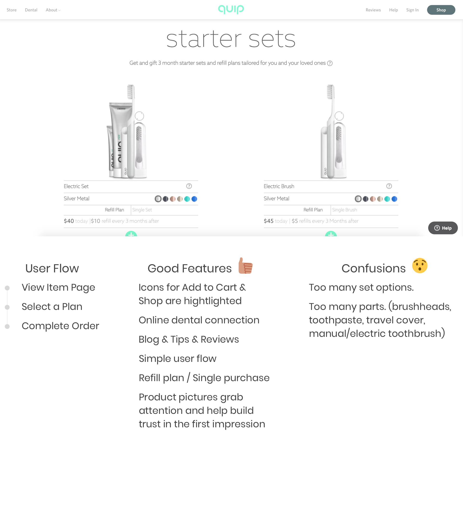
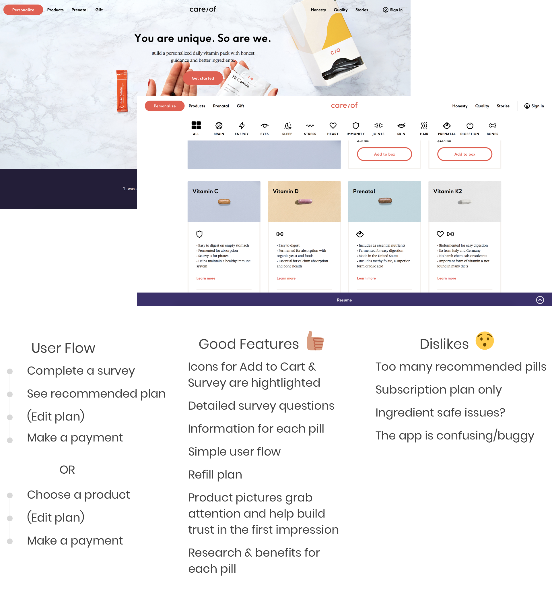
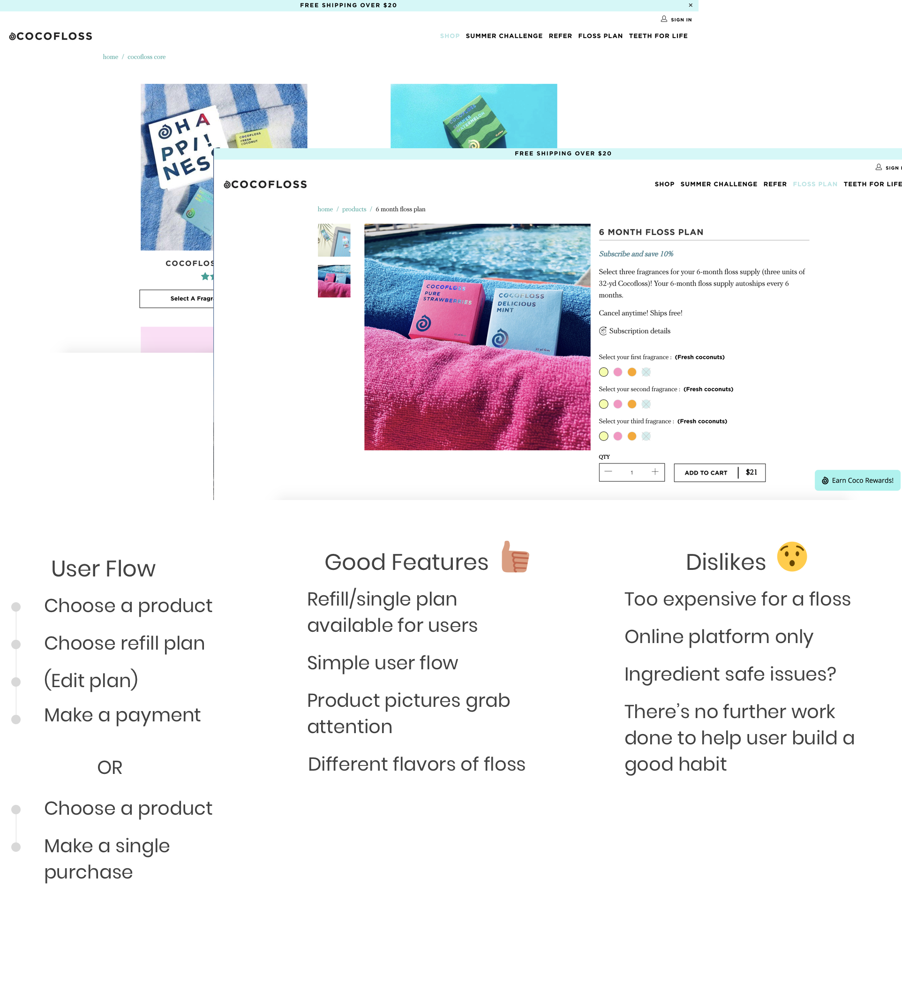
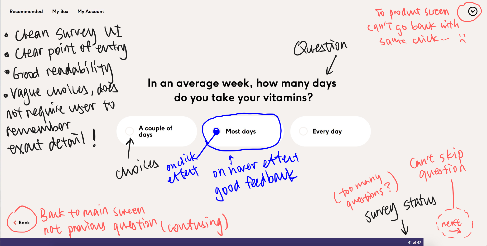
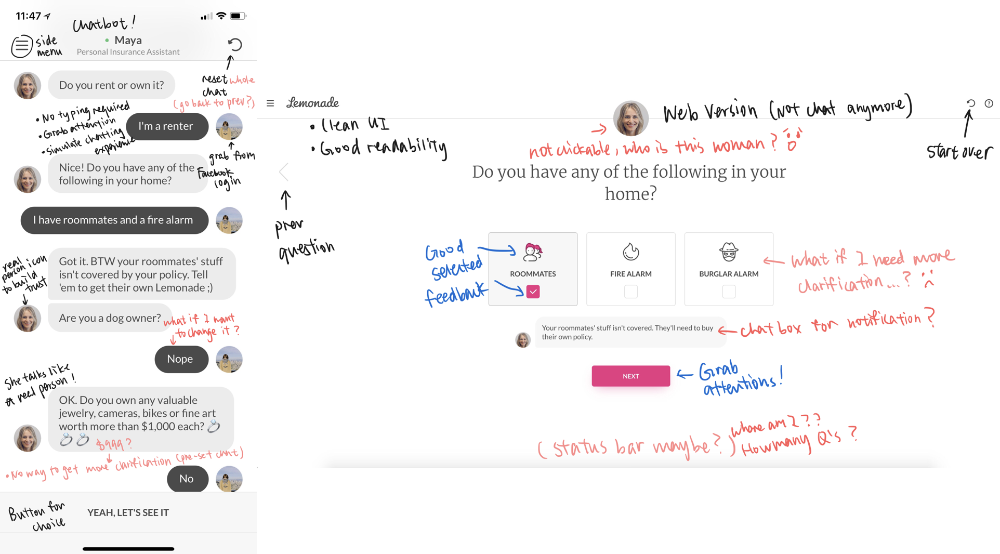
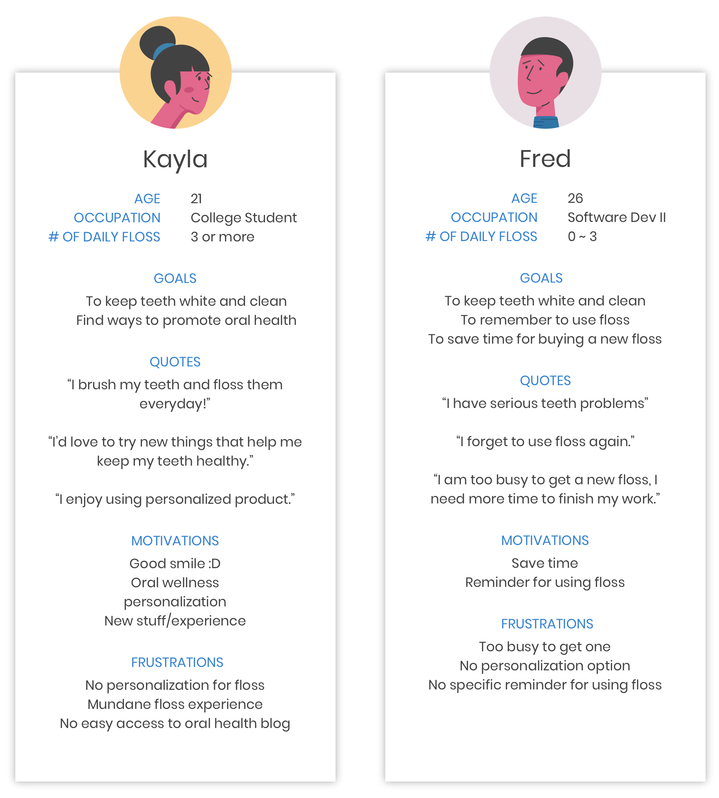
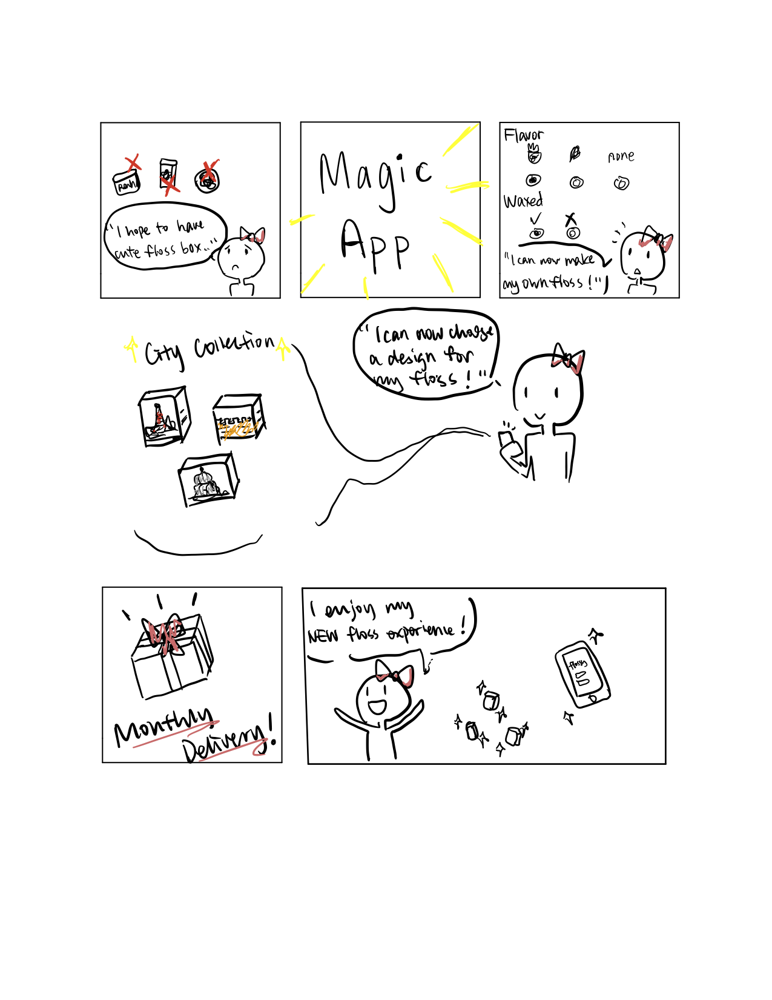
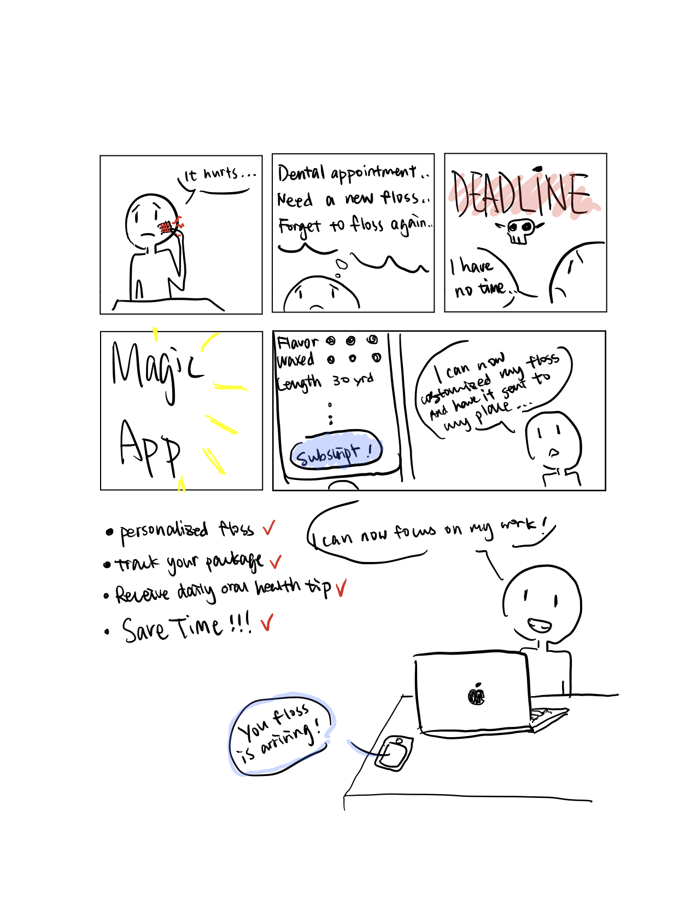
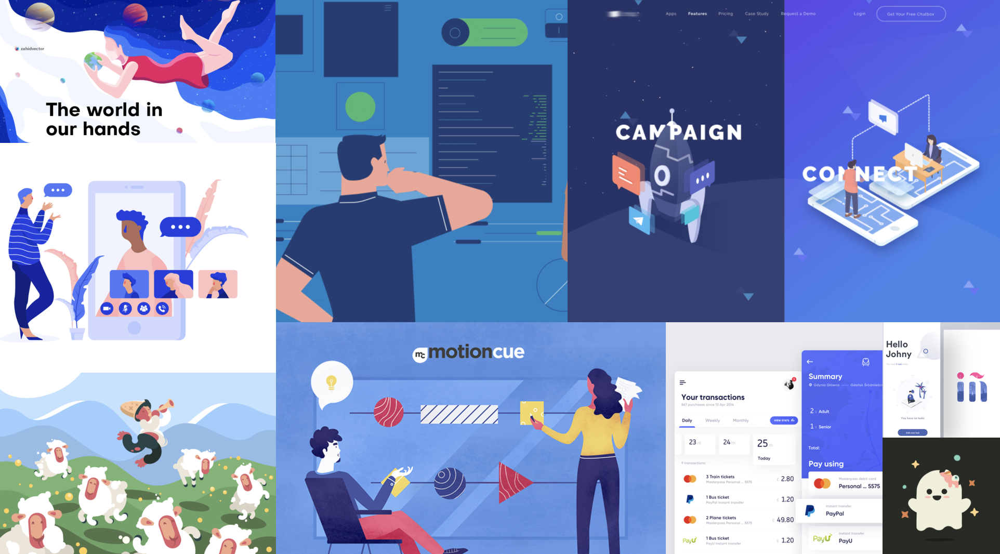

Background
When we think about our oral care routine, flossing is not generally the first thing to come to minds. We may have high-end electric toothbrush and multi-functioned toothpaste for brushing our teeth. However, flossing is also an essential part for the routine. If you are trying to figure out what might be causing some killer breath, the likely culprit is that you aren’t flossing regularly even if you are using a toothpaste specifically designed for bad breath!
When you munch down on a hamburger or have a few crackers throughout the course of the day, little remnants will get stuck between your teeth. Even if you might not be able to feel it with your tongue, that food you ate is slowly decaying.
As the food decays, first it will give off a foul odor that could perhaps knock over a horse. But beyond the smell, the bacteria is multiplying and will start to form a film on your teeth and gums.
This film will eventually form into plaque.
Problem Space
Every six months, you visit the dentist for a cleaning, and likely a lecture about the importance of flossing. But if you're like many dental patients, the advice travels in one ear and out the other. Since there is no instant gratification with flossing, some people may not take it seriously.
But flossing does about 40% of the work required to remove sticky bacteria, or plaque, from your teeth.
Gum disease can ruin the youthful aesthetics of your smile by eating away at gums and teeth. It also attacks the bones that support your teeth and the lower third of your face. People who preserve the height of that bone by flossing look better as they age.
I design this app to explore an opportunity for people to learn another "lecture" about flossing. Also, I aim to help people build healthy habit and keep it up!
My Role
This is an individual exploration. I am (of course) the lead UX designer! I am responsible for user research, data synthesis, concept mock-ups, wireframes, visual design and interactive prototype. I am super excited about doing everything by myself!

The Challenge
Product Objectives
• Flossing is often neglected and the issues that affect oral health are not actively addressed by individuals
• Help people build healthy habit
My Challenge
• Identify “when to do what and why”
• Proactively seek out resources to address the issues
• Present and iterate design recommendations based on feedback from my research & user testing
User Research
Online Research
To start, I looked for resources such as online documents, data, and participants.
Interviews & Observations
I aimed to identify the potential profile user group and find pain points and design opportunities in this phase of the process. A set of interview questions was used as a standard framework for each of the interviews. I conducted the interviews among people with different ages, genders, occupations and oral care routines. I incorporated the interview techniques I learned before, which was the master/apprentice model. I let the interviewee really lead the talking. The goal for the interview was to gather insights on each individual’s attitude and solution towards oral issues.
I gained meaningful data from our interviewees. I learned from the dentists about the importance of flossing. They pointed out that floss is the only thing that can really get into the space between the teeth and remove bacteria and it does a significant amount of the work required to remove them. They also concluded that people don’t really floss regularly. I also interviewed college students and several young professionals to learn about their insights. I found that people are able to acknowledge that they know about the benefits of flossing but many of them tend to forget or not spend time to do it.
Competitor Analysis
Along with other quantitative and qualitative data, competitor analysis done right is another valuable source of evidence to design with. Studying competitor sites properly by being a user gives me the chance to see what features work well and what are not. Also, I am able to spot the common patterns in the sector that users will probably be used to.
I aim to personalize the experience between users and my design. Therefore, I look up products that relate to oral care + subscription + personalization. I mainly focus on how other products absorb, understand, interpret, and deliver a personalized experience based on users' needs and preferences. By competitor analysis I can understand the role of the competitors' profile and identify their solutions for my possible major scenarios.



Exemplars
I also created an inspirational collection of related product solutions, UI, etc. I made quick marks for both good and bad features.


Synthesis
Persona
I developed user persona based on my interview data. I found that my primary users would be young adults who used floss. They might be too busy or lazy to purchase a floss and forgot to use it regularly while not having a optimal solution. My secondary users would be people who actively seek ways to improve oral health and address oral health problems. I recreated avatars from bonehaus@dribbble to practice my illustration skills. :D

Storyboard
pictures are worth a thousand words. Illustrating things works best for understanding of any concept or idea. The images can speak more powerfully than just words by adding extra layers of meaning.


Moodboard
Gathering some ideas and inspiration before actually start designing can streamline the design process and cut down the time I spend staring at a blank screen. Also, a visual representation can help everyone get on the same page!
